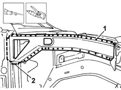
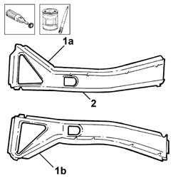
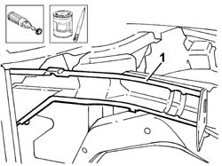
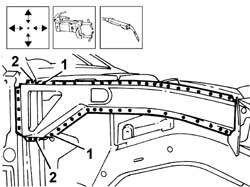

7210A55 PILLAR PANEL BRACKET/REINFORCEMENT
- Path
- Procedures > 72 panels and frames > 7210 REMOVING REFITTING > 7210A structural elements (front part) > 7210A55 PILLAR PANEL BRACKET/REINFORCEMENT
- Kind
- repair procedure (removal / refitting; the operation number is the code)
- Applies to
- all engines; all production periods
- Interactive page
- https://sloeber94.github.io/elrnDB-lThss/en/#/501025
Applies to: all engines; all production periods
Applies to: all engines; all production periods
 Removing
Removing
 Refitting
Refitting- Check whether the components connected are distorted through the bodyshell alignment measurements using suitable test equipment (test benches, templates or jigs).
- Carry out any bodyshell straightening operations before cutting the component.
1. Using a chamfering machine and a drill, remove the spot welds along the perimeter of the bracket.
2. Cut along the line illustrated in the areas in contact with the front pillar using a power saw.

Applies to: all engines; all production periods
- Straighten the edges of the panel along the surface of the bodyshell involved.
1. Remove the anti-corrosion treatment using a rotary brush from the entire inner (1a) and outer (1b) perimeter of the replacement part.
2. Apply electro-galvanizing paint to the inner perimeter of the replacement part.

Applies to: all engines; all production periods
1. Clean the perimeter of the bodyshell involved thoroughly using a rotary brush and apply electro-galvanizing paint.

Applies to: all engines; all production periods
- Position the replacement part correctly, secure it using self-locking clamps and check that it is correctly positioned.
1. Use a spot welder in the areas shown in the diagram.
2. Weld in the area shown in the diagram.

Applies to: all engines; all production periods
- Clean the areas involved in the welding thoroughly removing the excess material.
- Check that the component fitted is correctly positioned.
- Apply electro-galvanizing paint to the parts ground.